A dor
Equipamentos complexos tratados como “caixas pretas”
Muitos profissionais operam sem dominar o impacto clínico de cada parâmetro.
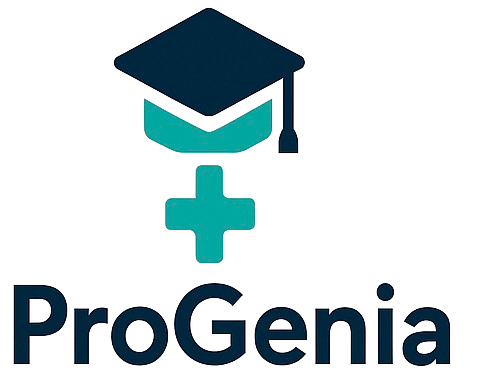
Aprendizado baseado em ciência e simulações para reduzir erro técnico e acelerar decisões clínicas.
Sem base física, o risco clínico cresce; a ProGenia fecha o gap entre execução técnica e raciocínio científico.
Muitos profissionais operam sem dominar o impacto clínico de cada parâmetro.
Resultado: artefatos, pior qualidade diagnóstica e mais risco terapêutico.
Muitas graduações não aprofundam o ensino de novas tecnologias, e a formação continuada é escassa fora dos grandes centros.
Transformamos teoria em prática segura: testar, interpretar e corrigir condutas.
Padronizam o ensino prático e escalam formação com evidência de desempenho.
Rastreiam evolução por competência e direcionam intervenções pedagógicas com mais precisão.
Treinam equipes com menor risco e fortalecem decisões antes da prática em paciente real.
Padronizam condutas com ciência aplicada e reduzem a variabilidade entre profissionais.
Reduzem a distância entre teoria e prática, com mais segurança para interpretar e decidir.
Ampliam acesso à atualização em novas tecnologias sem barreira geográfica.
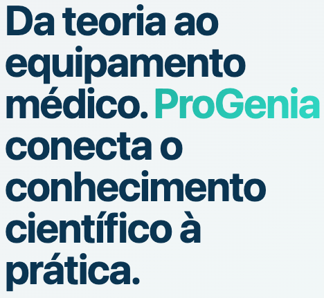
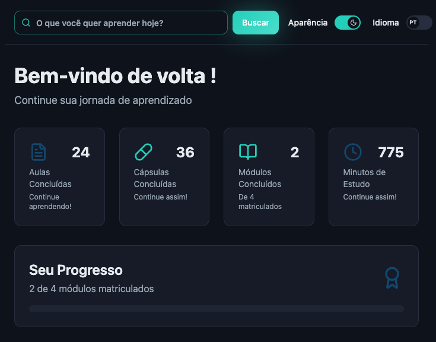
Transformar teoria em prática clínica segura com simulações realistas e rigor científico.
Ser referência na ponte entre conhecimento teórico e prática segura.
Segurança clínica, evidência científica e inteligência pedagógica em cada experiência.
Atualização contínua e acesso escalável para levar capacitação além dos grandes centros.
Conteúdo curto e aplicado para resolver dúvidas técnicas em poucos minutos.
Tempo médio: 2-10 min | Objetivo: decisão pontual
Trilha estruturada que conecta fundamentos técnicos, interpretação e tomada de decisão clínica.
Jornada: base física -> técnicas aplicadas -> prática clínica.
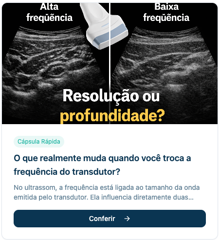
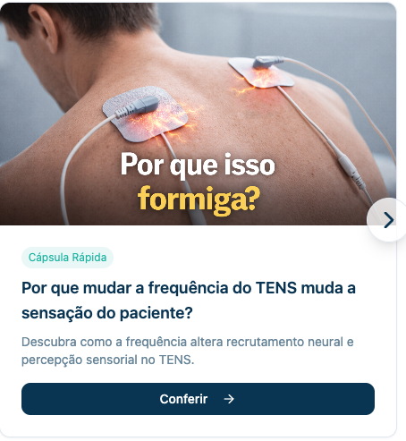
Nos laboratórios virtuais, o aluno simula parâmetros físicos do equipamento e visualiza o efeito macro de cada ajuste no resultado clínico. Assim, transforma causa e efeito técnico em decisão mais segura antes da prática com paciente real.
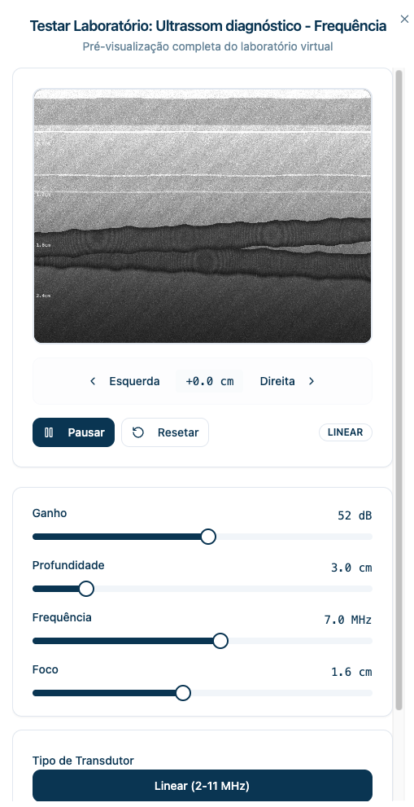
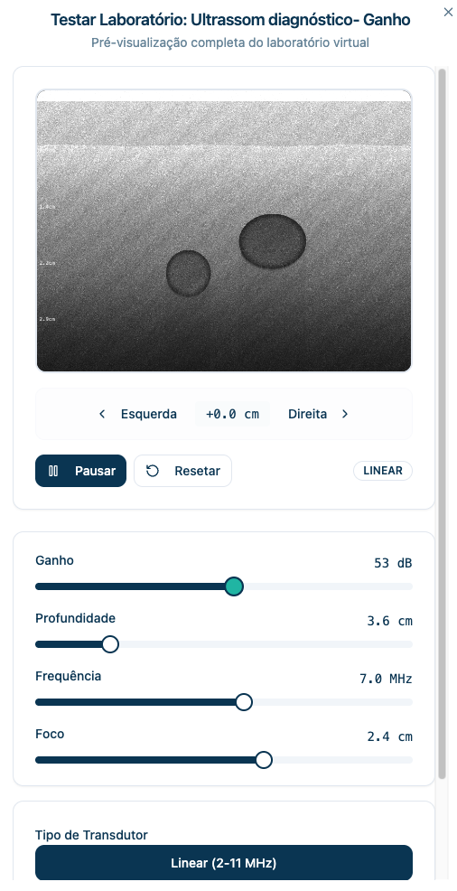
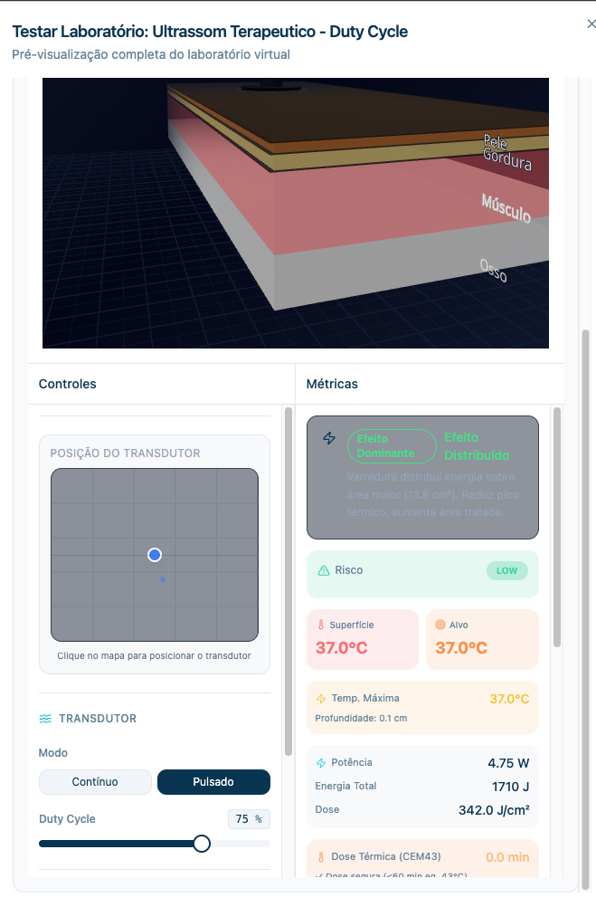
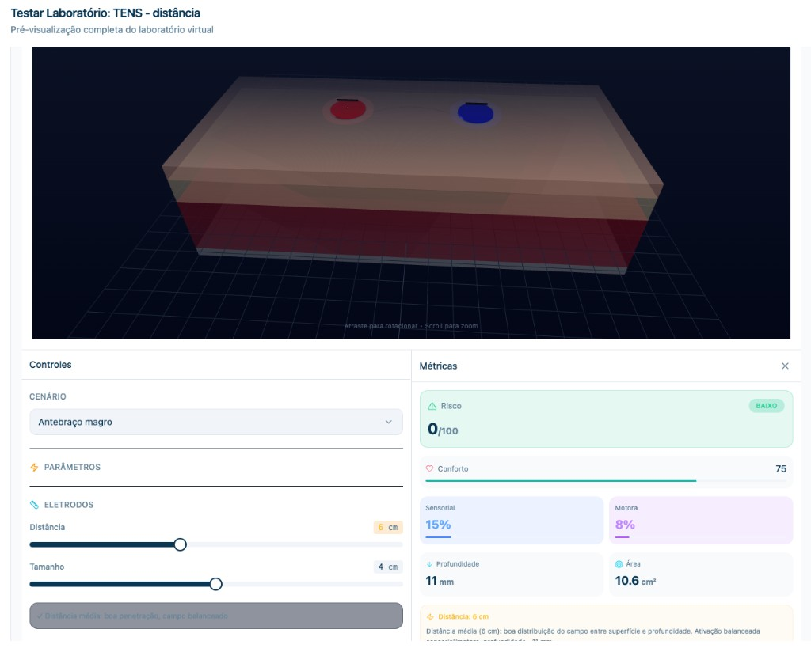
Aqui, o aluno entende por que uma imagem muda e como isso impacta a decisão clínica. Em vez de decorar protocolo, ele aprende a interpretar, comparar e escolher melhor em cenários reais.
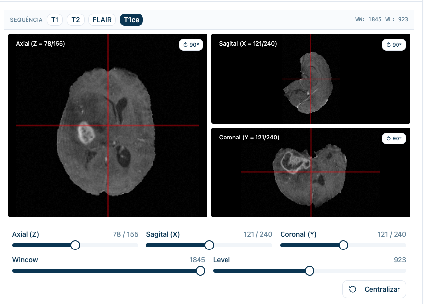
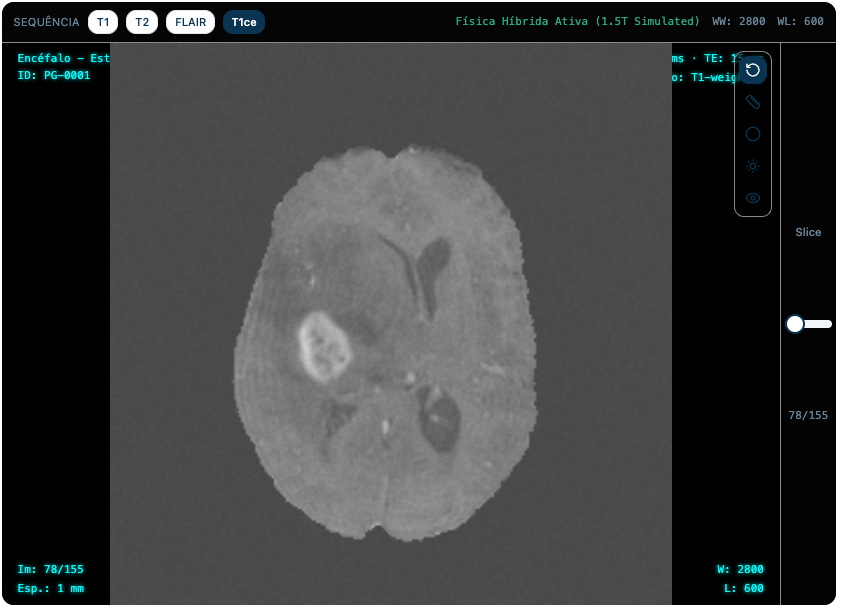
A IA observa o contexto técnico do laboratório e responde com perguntas orientadas por evidência. Isso reduz resposta superficial e fortalece raciocínio clínico.
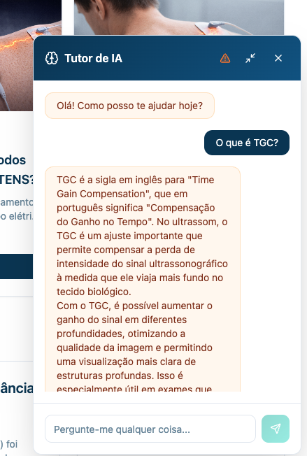
Coordenadores e professores acompanham em um único painel o comportamento de aprendizagem por turma, disciplina e laboratório virtual. O foco sai da presença e vai para competência demonstrada.
A plataforma consolida métricas de engajamento, qualidade técnica e evolução clínica. Isso permite intervenção docente mais precisa e ganho de performance com evidência objetiva.
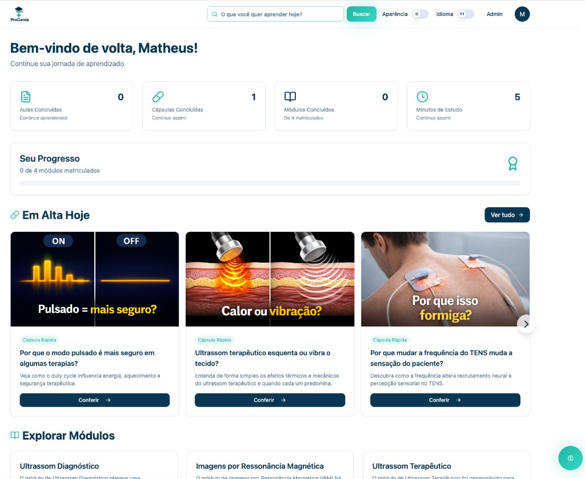
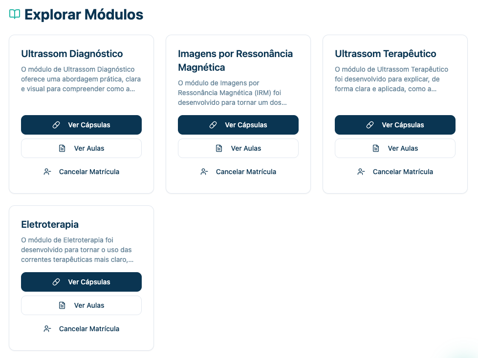
A ProGenia nasce com vocação institucional: integração com centros acadêmicos, hospitais-escola e ambientes de pesquisa aplicada para acelerar qualidade de formação e segurança assistencial.
Se sua instituição busca formar profissionais que compreendem, interpretam e decidem com base científica, a ProGenia é a ponte entre conhecimento e prática segura.